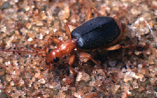

Besouros-bombardier e o Argumento do Design
por T
Outros Links:
|
Um princípio fundamental do criacionismo é que toda a vida parece projetada, e um exemplo frequentemente citado desse projeto é o besouro-bombardier. Sustentar tal alegação exige um exame do besouro-bombardier e do que "projeto" realmente significa. Ao examinar essas questões, no entanto, o besouro-bombardier mostra evidências de evolução e desafia seriamente o conceito de projeto.
Este artigo examina primeiro os besouros-bombardieiros e o que os torna especiais; em seguida, analisa como eles se relacionam com diferentes conceitos de design — especificamente, complexidade, padrão e propósito.
O Que São Besouros Bombardier?
Os besouros-bombardier incluem os besouros terrestres dos quatro tribos Brachinini, Paussini, Ozaenini e Metriini [Aneshansley et al, 1983]—mais de 500 espécies no total [Lawrence & Britton, 1991]. O gênero Brachinus é o mais amplamente distribuído.
 |
Os besouros-bombardieiros são criaturas notáveis, merecendo verdadeiramente a atenção que receberam. Eles ganharam seu nome comum pela capacidade de se defenderem contra predadores ao disparar uma mistura de produtos químicos tóxicos em ebulição de glândulas especiais em seu abdômen. Em pelo menos uma espécie, o jato assume a forma de um pulso. [Dean et al., 1990] (Outras espécies emitem um fluxo contínuo; a maioria das espécies não foi investigada tão minuciosamente.)
O mecanismo de seu jato funciona da seguinte forma: células secretoras produzem hidroquinonas e peróxido de hidrogênio (e talvez outras substâncias químicas, dependendo da espécie), que se acumulam em um reservatório. O reservatório abre-se através de uma válvula controlada por músculos para uma câmara de reação de paredes espessas. Esta câmara é revestida por células que secretam catalases e peroxidases. Quando o conteúdo do reservatório é forçado para a câmara de reação, as catalases e peroxidases decompõem rapidamente o peróxido de hidrogênio e catalisam a oxidação das hidroquinonas em p-quinonas. Estas reações liberam oxigênio livre e geram calor suficiente para elevar a mistura ao ponto de ebulição e vaporizar cerca de um quinto dela. Sob a pressão dos gases liberados, a válvula é forçada a fechar, e os produtos químicos são expelidos explosivamente através de aberturas na ponta do abdômen. [Aneshansley & Eisner, 1969; Aneshansley et al, 1983; Eisner et al, 1989]
Muita literatura criacionista fornece uma descrição imprecisa do processo. Baseada em uma tradução admitidamente descuidada de um artigo de 1961 de Schildknecht e Holoubek, [Kofahl, 1981] Duane Gish alegou que o peróxido de hidrogênio e as hidroquinonas explodiriam espontaneamente se misturados sem um inibidor químico, e que o besouro começa com uma mistura de todos os três e adiciona um anti-inibidor quando deseja a explosão. [Weber, 1981] Na verdade, os dois não explodem quando misturados, como demonstrado por outros. [Dawkins, 1987, p. 86-87] (Schildknecht propôs, de fato, um inibidor físico que impedia a mistura de se degradar em besouros não dissecados; na verdade, a degradação que ele observou provavelmente foi simplesmente um resultado da exposição ao ar.) Gish continuou a usar o cenário equivocado mesmo após ser corrigido por Kofahl em 1978. [Weber, 1981] O mesmo erro também é repetido em livros de Hitching em 1981, Huse em 1983 e 1993, e duas vezes em uma revista criacionista em 1990 [Anon, 1990a, b].
Em um livro infantil criacionista, Rue faz um melhor trabalho
descrevendo a química, mas erra o mecanismo físico
em vez disso, dizendo que o líquido é disparado através da câmara
de combustão e não explode até fora do besouro.
"Se explodisse dentro, ele explodiria qualquer Besouro Bombardier
em pedaços."
[Rue,
1984, p. 23] Na verdade, é porque a explosão
ocorre dentro da câmara de combustão que sua força pode ser
direcionada contra uma ameaça.
É preciso perguntar quanto peso um argumento de design tem se as pessoas que o fazem não sabem como é o design.
Complexidade
Saber apenas o que algo parece não nos diz se parece projetado; para isso, também precisamos saber o que "projeto" significa. Embora raramente seja definido, o aspecto mais importante do projeto no que diz respeito ao criacionismo parece ser a complexidade. Como Richard Lumsden diz,
Sistemas de alta complexidade, ou seja, sistemas multicomponentes funcionalmente integrados, sistemas de alta especificidade em que apenas uma ou muito poucas das muitas disposições possíveis desses componentes funcionam, e sistemas de baixa probabilidade, pelo menos de ocorrência espontânea... estas são as marcas distintivas de sistemas projetados e projetados com propósito. [Lumsden, 1995]
Contudo, a teoria da evolução também permite que sistemas complexos, funcionalmente integrados e de baixa probabilidade surjam por meio de variação gradual e seleção. Por exemplo, Darwin explicou como, sob sua teoria, algumas células fotossensíveis poderiam evoluir gradualmente para formar os olhos humanos. [Darwin, 1872, cap. 6] Para que a complexidade seja um problema para a evolução, ela deve apresentar alguma propriedade que exclua o desenvolvimento gradual. Michael Behe propõe tal propriedade com o conceito que ele chama de "complexidade irredutível," que ele define como "um único sistema composto por várias partes bem ajustadas e interagentes que contribuem para a função básica, no qual a remoção de qualquer uma das partes faz com que o sistema cesse efetivamente de funcionar."
[Behe, 1996, p. 39] Embora Behe deixe em aberto as questões sobre se os besouros-foguete são complexos irredutivelmente, Gish expressa o conceito de forma sucinta com referência a eles quando diz: "Como você vai explicar esse passo a passo pela evolução por seleção natural? Não pode ser feito!"
[citado em Weber, 1981]
Gish está errado; uma evolução passo a passo do sistema de bombarda não é tão difícil de imaginar. O cenário abaixo mostra uma possível evolução passo a passo do mecanismo de besouro bombarda a partir de um artrópode primitivo.
- As quinonas são produzidas por células epidérmicas para o bronzeamento da cutícula. Isso ocorre comumente em artrópodes. [Dettner, 1987]
- Algumas das quinonas não são consumidas, mas permanecem na epiderme, tornando o artrópode desagradável ao paladar. (As quinonas são utilizadas como secreções defensivas em uma variedade de artrópodes modernos, de besouros a milipés. [Eisner, 1970])
- Pequenas invaginações desenvolvem-se na epiderme entre os escleritos (placas de cutícula). Ao se mover levemente, o inseto pode pressionar mais quinonas sobre sua superfície quando necessário.
- As invaginações aprofundam-se. Músculos são movidos ligeiramente, permitindo que ajudem a expulsar as quinonas de algumas delas. (Muitas formigas possuem glândulas semelhantes a esta perto do final de seu abdômen. [Holldobler & Wilson, 1990, pp. 233-237])
- Um par de invaginações (agora reservatórios) torna-se tão profundo que as outras tornam-se insignificantes em comparação. Estas gradualmente reverterem à epiderme original.
- Em vários insetos, diferentes produtos químicos defensivos além das quinonas aparecem. (Veja Eisner, 1970, para uma revisão.) Isso ajuda esses insetos a se defenderem contra predadores que evoluíram resistência às quinonas. Um dos novos produtos químicos defensivos é a hidroquinona.
- Células que secretam as hidroquinonas desenvolvem-se em múltiplas camadas sobre parte do reservatório, permitindo que mais hidroquinonas sejam produzidas. Canais entre as células permitem que as hidroquinonas de todas as camadas alcancem o reservatório.
- Os canais tornam-se um ducto, especializado no transporte dos produtos químicos. As células secretoras recuam da superfície do reservatório, tornando-se eventualmente um órgão separado.
Esta etapa -- glândulas secretoras conectadas por ductos a reservatórios -- existe em muitos besouros. A configuração particular de glândulas e reservatórios que os besouros-foguete possuem é comum aos outros besouros em sua subordem. [Forsyth, 1970]
- Músculos se adaptam para fechar o reservatório, impedindo assim que os produtos químicos vazem quando não são necessários.
- O peróxido de hidrogênio, que é um subproduto comum do metabolismo celular, mistura-se com as hidroquinonas. Os dois reagem lentamente, de modo que uma mistura de quinonas e hidroquinonas é utilizada para defesa.
- Células que secretam pequenas quantidades de catalases e peroxidases aparecem ao longo da passagem de saída do reservatório, fora da válvula que o fecha do lado de fora. Estas garantem que mais quinonas apareçam nas secreções defensivas. Catalases existem em quase todas as células, e peroxidases também são comuns em plantas, animais e bactérias, de modo que esses produtos químicos não precisam ser desenvolvidos do zero, mas apenas concentrados em um local.
- Mais catalases e peroxidases são produzidas, de modo que a descarga é mais quente e é expelida mais rapidamente pelo oxigênio gerado pela reação. O besouro Metrius contractus fornece um exemplo de besouro-foguete que produz uma descarga espumosa, não jatos, de suas câmaras de reação. O borbulhamento da espuma produz uma névoa fina. [Eisner et al., 2000]
- As paredes dessa parte da passagem de saída tornam-se mais firmes, permitindo que resistam melhor ao calor e à pressão gerados pela reação.
- Ainda mais catalases e peroxidases são produzidas, e as paredes endurecem e moldam-se em uma câmara de reação. Gradualmente, elas tornam-se o mecanismo dos besouros-foguete de hoje.
- A ponta do abdômen do besouro torna-se um pouco mais alongada e flexível, permitindo que o besouro aponte sua descarga em várias direções.
Observe que todos os passos acima são pequenos ou podem ser facilmente divididos em etapas menores. O mecanismo dos besouros-bombardieiros pode surgir exclusivamente por meio da evolução microacumulada. Além disso, todos os passos são provavelmente vantajosos, portanto, seriam selecionados. Não são necessários eventos improváveis. Como mencionado, vários dos estágios intermediários são conhecidos por serem viáveis, fato comprovado pela sua existência em populações vivas.
O cenário acima é hipotético; a evolução real dos besouros-foguete provavelmente não ocorreu exatamente assim. Os passos são apresentados sequencialmente para clareza, mas não precisam ter ocorrido exatamente na ordem dada. Por exemplo, os músculos que fecham o reservatório (passo 9) poderiam ter ocorrido simultaneamente com qualquer um dos passos 6-10. Determinar a sequência real de desenvolvimento exigiria muito mais pesquisa sobre a genética, anatomia comparada e paleontologia dos besouros. O cenário demonstra, no entanto, que a evolução de uma estrutura complexa está longe de ser impossível. A existência de cenários alternativos apenas reforça essa conclusão.
Alguns outros pontos sobre este cenário devem ser destacados:
- As partes de um sistema integral não precisam ser criadas especificamente para aquele sistema, e características usadas para um propósito podem ser usadas para outro. As quinonas que originalmente serviam para escurecer a cutícula mais tarde foram utilizadas para defesa. Os músculos que controlam a válvula e comprimem o reservatório poderiam facilmente ser adaptados de músculos que já existiam no abdômen do besouro.
- A complexidade pode diminuir tanto quanto aumentar. No cenário proposto, a maioria das invaginações nas quais as quinonas apareceram mais tarde desapareceu. Em outros casos, uma estrutura poderia originalmente desenvolver-se com uma estrutura de suporte complexa que mais tarde diminui ou desaparece.
- Dois ou mais componentes podem evoluir um pouco de cada vez em conjunto. A força das paredes da câmara de reação e a quantidade de catalases aumentaram juntas. Um não precisava estar presente em sua forma final antes que o outro existisse.
Qualquer um desses pontos torna possível que a complexidade, mesmo a complexidade irredutível, evolua gradualmente. Muitas pessoas ainda terão dificuldade em imaginar como a complexidade poderia surgir gradualmente. No entanto, a complexidade em outras formas surge na natureza o tempo todo; nuvens, formações de cavernas e cristais de gelo são apenas alguns exemplos. O mais importante é que a natureza não é limitada pela falta de imaginação de qualquer pessoa.
Padrão
Outro aspecto do design é a aparência de algum tipo de padrão. Novamente, embora a evolução também preveja padrões — especialmente uma organização hierárquica aninhada de características — e esse é o padrão que vemos. Por exemplo, entre os artrópodes, os insetos compartilham um conjunto de traços que os distinguem de outros artrópodes (seis pernas, três regiões corporais, um par de antenas, etc.); entre os insetos, os besouros são distinguidos por seu próprio conjunto de características; entre os besouros, a subordem Adephaga possui um conjunto único de traços; da mesma forma para os besouros de terra como um subconjunto da Adephaga, os besouros-bombardier como um subconjunto desse grupo, e todos os subgrupos dentro deles [Erwin, 1970]. Tal organização aparece não apenas ao observar características morfológicas, mas o mesmo padrão surge ao observar bioquímica, embriologia, genética e até mesmo comportamento. Embora não tenham sido realizadas estudos genéticos sobre besouros-bombardier, posso prever com confiança que as semelhanças genéticas corresponderão de perto às semelhanças morfológicas que já foram estabelecidas.
A evolução também prevê padrões de distribuição, com espécies e grupos de espécies mais semelhantes ocorrendo geralmente mais próximos uns dos outros. Tais padrões são observados. [Erwin, 1970, pp. 184-208]
O criacionismo, no que diz respeito ao design, diz pouco, exceto que formas semelhantes foram criadas para funções semelhantes e formas diferentes foram criadas para diferentes funções, [Morris, 1985, p. 70] ou, brevemente, que a forma segue a função. No entanto, isso não descreve o padrão que vemos na natureza.
A mesma função frequentemente assume formas diferentes. Muitos besouros do solo têm hábitos e habitats bastante semelhantes aos dos centopeias, mas os dois grupos não se parecem nada. Um grupo de besouros-bombardeiro (os paussíneos) utiliza o mesmo mecanismo químico para disparar seu jato defensivo como outros besouros-bombardeiro, mas possuem um método totalmente diferente de mira. Os besouros-bombardeiro da tribo Brachinine têm as aberturas das glândulas na ponta do abdômen e simplesmente curvam o abdômen para mirar; os paussíneos têm as aberturas das glândulas mais laterais, disparam apenas da câmara no lado desejado e, se quiserem disparar para frente, movem levemente o abdômen de modo que a abertura fique adjacente a uma aba em seus élitros que desvia o jato para frente. [Eisner e Aneshansley, 1982] As glândulas pigiálicas são usadas para defesa não apenas por besouros-bombardeiro, mas por praticamente todos os besouros da subordem Adephaga, mas a estrutura das glândulas e os químicos que elas secretam variam significativamente entre diferentes famílias e gêneros de besouros. [Forsyth, 1970; Kanehisa & Murase, 1977; Moore, 1979; Eisner et al., 1977]
O mesmo formato é às vezes usado para diferentes funções. Não conheço bons exemplos entre os besouros-bombardieiros, mas os besouros-carrapateiros mostram um exemplo. Muitas espécies expelem substâncias químicas defensivas da ponta de seu abdômen. Os besouros do gênero Stenus têm outro uso para essas substâncias químicas. Quando ameaçados enquanto se alimentam na água, eles tocam suas glândulas abdominais na superfície da água. As substâncias químicas perturbam a tensão superficial, o que propuls rapidamente o besouro para vários metros. [Eisner, 1970, p. 200]
Finalmente, algumas formas não têm função. Algumas espécies de besouros-bomba (e muitos outros insetos, parafraseando) não podem voar, mas ainda possuem asas vestigiais de voo. [Erwin, 1970, pp. 46, 55, 91, 114-115, 119] Alguns podem argumentar que os remanescentes de asas têm uma função ainda desconhecida, mas mesmo na remota possibilidade de que funções possam ser encontradas para todas as asas vestigiais, a situação muda apenas para o caso anterior de diferentes funções para a mesma forma.
Os criacionistas também alegam que as formas de vida foram criadas em "espécies" distintas, mas essas espécies também não aparecem em nenhuma forma tangível. Diferentes espécies nem sempre estão perfeitamente isoladas reprodutivamente. Algumas espécies de besouros-bombardier são tão semelhantes que até especialistas teriam dificuldade em diferenciá-las. Em níveis mais altos de classificação, é simples encontrar grupos que estão inequivocamente isolados, mas esses grupos estão todos aninhados uns dentro dos outros (uma consequência da descendência comum), de modo que é inteiramente arbitrário quais grupos rotular como diferentes "espécies". Você identificaria "espécie" com espécie, grupo de espécies, subgênero, gênero, subtribo, tribo, divisão, família, ordem, filo ou algum nível de classificação entre esses níveis? Se você decidir que uma certa quantidade de variação e não mais é aceitável dentro de uma espécie, é sempre possível encontrar um agrupamento natural que inclua apenas ligeiramente mais variação e, portanto, que poderia ser alcançado por microevolução. Provavelmente, a melhor evidência para a falta de espécies naturais é a incapacidade dos próprios criacionistas de decidir o que eles significam.
Em resumo, os padrões de semelhanças e diferenças que observamos na natureza são exatamente o que esperaríamos da descendência com modificação; eles não correspondem ao que veríamos em uma criação onde a forma segue a função. "Espécies" são arbitrárias e feitas pelo homem; não podem ser determinadas a partir da natureza.
Propósito
Finalmente, outro aspecto do design é o propósito. Mas o propósito pode ser ainda mais difícil de distinguir do que o design. Pode parecer óbvio que o propósito do mecanismo de defesa de um besouro bombardier é protegê-lo contra predadores – e de fato ele é eficaz nessa defesa [Eisner, 1958] – mas isso é apenas nossa visão; sem ler a mente do besouro, não podemos saber qual é o seu propósito. Na verdade, o mecanismo do besouro bombardier é provavelmente apenas um reflexo, já que não dispara contra alguns predadores (como alguns colecionadores humanos) e dispara contra alguns não-predadores (como um par de pinças manuseado por um experimente). Em última análise, declarações de propósito são declarações de nossas próprias crenças e nada mais.
Além disso, uma aparência de propósito é consistente com a teoria da evolução. A teoria diz que os organismos sobreviventes desenvolveram estratégias que têm sucesso; aqueles que adquiriram estratégias falhas já não estão mais por aí. Como as estratégias têm sucesso, elas parecem a nós ter o propósito do que elas têm sucesso. A defesa do besouro bombardier não funciona porque esse é o seu propósito; atribuímos esse propósito porque a defesa do besouro funciona.
A crença de algumas pessoas é que a defesa do besouro-tanque, seja reflexa ou não, mostra o propósito de Deus. Mas afirmar que se conhece a mente de Deus é uma forma de arrogância. A Bíblia deixa claro (por exemplo, Jó 37:5, Ecl. 11:5, Is. 55:8) que não podemos entender os caminhos de Deus.
Para muitos criacionistas, o propósito leva a uma contradição inextricável. Eles afirmam que o mecanismo de defesa do besouro foi projetado, mas para quê? Eles também dizem que a morte não fazia parte do projeto original, mas veio mais tarde com o pecado original [Morris, 1985, p. 211]. Se a defesa do besouro-foguete fazia parte da criação original, ela não tinha propósito; se veio mais tarde, não foi projetada. E o problema envolve mais do que seu mecanismo de defesa. Todos os besouros-foguete são predadores e, portanto, são eles próprios agentes da morte. Mesmo como larvas, eles são predadores; pelo menos duas espécies são ectoparasitoides das pupas de outros besouros, devorando lentamente e, em última análise, matando seus hospedeiros indefesos [Erwin, 1967]. Esse aspecto de seu ciclo de vida foi projetado junto com o resto do besouro?
Outros Comentários
Para determinar se algo parece desenhado, você primeiro deve ser capaz de distinguir o desenhado do não desenhado. Isso imediatamente levanta a questão do que é não desenhado. Se você acredita que Deus criou tudo, então nada é não desenhado, e as alegações de aparência de desenho falham por falta de comparação. Alternativamente, você pode alegar que apenas certas partes selecionadas do universo foram desenhadas por Deus.
Conclusões
Os besouros-bombardier parecem ter sido projetados? Sim; parecem ter sido projetados pela evolução. Suas características, comportamentos e distribuição encaixam-se perfeitamente nos tipos de padrões que a evolução cria. Ninguém ainda encontrou nada sobre qualquer besouro-bombardier que seja incompatível com a evolução.
Isso não significa, é claro, que sabemos tudo sobre a evolução dos besouros-bombardier; muito pelo contrário. Mas as lacunas em nosso conhecimento não devem ser interpretadas como significativas por si mesmas. Algumas pessoas parecem desconfortáveis com a ideia de incerteza, tão desconfortáveis que tentam transformar o desconhecido no inatingível. Nunca houve nenhuma evidência de que os besouros-bombardier não pudessem ter evoluído, mas apenas porque não conseguiam explicar exatamente como os besouros evoluíram, muitas pessoas saltaram à conclusão de que uma explicação era impossível. Na verdade, sua conclusão diz muito mais sobre elas mesmas do que sobre os besouros. Chegar a tal conclusão baseada apenas na falta de conhecimento é uma espécie de arrogância.
A evolução desqualifica um designer inteligente? Muitas pessoas rejeitam a ideia da evolução porque acham que ela retira qualquer papel para Deus desempenhar na criação da vida. Tal é o caso, no entanto, apenas para pessoas que exigem que o papel de Deus se encaixe em certas concepções restritas do que "design inteligente" deve significar. Milhões de pessoas em todo o mundo não têm dificuldade em acreditar em Deus e aceitar a evolução ao mesmo tempo. A evolução apenas contradiz um Deus feito pelo homem que opera sob restrições feitas pelo homem.
Finalmente, lembre-se de que os argumentos gerais usados aqui aplicam-se a muito mais do que besouros-bombardier. Criacionistas argumentaram sobre uma aparência de design em tudo, desde flagelos bacterianos até a metamorfose de borboletas. Esses argumentos compartilham todas as mesmas falácias; eles são todos baseados em uma combinação de ignorância combinada com um conceito de design que é indistinguível da evolução. Se um tipo de design incompatível com a evolução fosse encontrado na biologia, ninguém estaria mais entusiasmado do que os biólogos profissionais. Até agora, ainda não encontramos tal design.
Referências
Aneshansley, Daniel J. & T. Eisner, 1969. Bioquímica a 100C: descarga secretora explosiva de besouros-bombardier (Brachinus). Science 165: 61-63.
Aneshansley, D.J., T.H. Jones, D. Alsop, J. Meinwald, & T. Eisner, 1983. Concomitantes térmicos e bioquímica do mecanismo de descarga explosiva de alguns besouros-bombardier pouco conhecidos. Experientia 39: 366-368.
Anônimo, 1990a.
O incrível besouro-ferramenteiro. Creation Ex Nihilo 12(1): 29.
http://www.answersingenesis.org/home/area/magazines/docs/v12n1_beetle.asp
Anônimo, 1990b. Bombardier beetle's 'buzz bombs'. Creation Ex Nihilo 12(4): 6.
Behe, Michael J., 1996. A Caixa Preta de Darwin, Free Press, NY.
Darwin, Charles, 1872, 1994. A Origem das Espécies, Senate, London.
Dawkins, Richard, 1987. O Relógio Cego, Norton, NY.
Dean, Jeffrey, D.J. Aneshansley, H.E. Edgerton, T. Eisner, 1990. Jato de pulso biológico do spray defensivo do besouro-foguete: um jato de pulso biológico. Science 248: 1219-1221.
Dettner, Konrad, 1987. Quimiosistemática e evolução das defesas químicas de besouros. Annual Review of Entomology 32: 17-48.
Eisner, Thomas, 1958. O papel protetor do mecanismo de spray do besouro-bomba, Brachynus ballistarius Lec. Journal of Insect Physiology 2: 215-220.
Eisner, Thomas, 1970. Defesa química contra predação em artrópodes. Em Sondheimer, E. & J. B. Simeone, Ecologia Química, Academic Press, NY, pp. 157-217.
Eisner, Thomas, T.H. Jones, D.J. Aneshansley, W.R. Tschinkel, R.E. Silberglied, J. Meinwald, 1977. Química das secreções defensivas de besouros-bombardieiros (Brachinini, Metriini, Ozaenini, Paussini). J. Insect Physiol. 23: 1382-1386.
Eisner, Thomas & Daniel J. Aneshansley, 1982. Direcionamento de jato em besouros-bombardier: deflexão do jato pelo efeito Coanda. Science 215: 83-85.
Eisner,
Thomas, D.J. Aneshansley, M. Eisner, A.B. Attygalle, D.W.
Alsop, J. Meinwald, 2000. Mecanismo de spray do besouro
bombardier mais primitivo (Metrius contractus).
Journal of Experimental Biology 203:
1265-1275.
Resumo:
http://jeb.biologists.org/cgi/content/abstract/203/8/1265
Texto Completo (PDF):
http://jeb.biologists.org/cgi/reprint/203/8/1265.pdf
Eisner, Thomas, George E. Ball, Braden Roach, Daniel J. Aneshansley, Maria Eisner, Curtis L. Blankespoor, & Jerrold Meinwald, 1989. Defesa química de um besouro-bombardeiro Ozaenine da Nova Guiné. Psyche 96: 153-160.
Erwin, Terry L., 1967. Besos-de-terra (Coleoptera, Carabidae) da América do Norte: Parte II. Biologia e comportamento de Brachinus pallidus Erwin na Califórnia. Coleopterists' Bulletin 21: 41-55
Erwin, Terry Lee, 1970. Uma reclassificação de besouros-bombardier e uma revisão taxonômica das espécies das Américas do Norte e Central (Carabidae: Brachinida). Quaestiones Entomologicae 6: 4-215.
Forsyth, D.J., 1970. A estrutura das glândulas defensivas dos Cicindelidae, Amphizoidae e Hygrobiidae (Insecta: Coleoptera). J. Zool. Lond., 160: 51-69.
Hitching, Francis, 1981. O Pescoço da Girafa, Meridian, NY, p. 68.
Holldobler, Bert & Edward O. Wilson, 1990. As Formigas, Bleknap Press, MA.
Huse, Scott M., 1983. O Colapso da Evolução, Baker Books, Grand Rapids, MI.
Huse, Scott M., 1993. O Colapso da Evolução, 2ª ed., Baker Books, Grand Rapids, MI, pp. 98-100.
Kanehisa, Katsuo & Masanori Murase, 1977. Estudo comparativo dos sistemas de defesa pigdal em besouros carábidos. Appl. Ent. Zool., 12(3): 225-235.
Kofahl, Robert
E., 1981. O besouro-bombardiro rebate.
Creation/Evolution 2(3): 12-14.
http://www.ncseweb.org/resources/articles/751_issue_05_volume_2_number_3__12_4_2002.asp#The%20Bombardier%20Beetle%20Shoots%20Back
Lawrence, J.F. & E.B. Britton, 1991. Coleoptera. In CSIRO, Os Insetos da Austrália, vol. 2, Cornell Univ. Press, Ithaca, NY, pp. 543-683.
Lumsden, Richard, 1995, citado por Alters, Brian J., 1995, Uma análise de conteúdo do Instituto de Pesquisa Criacionista sobre o Instituto de Criacionismo Científico. Creation/Evolution 15(2): 1-15.
Moore, Barry P., 1979. Defesa química em carábidos e suas implicações para a filogenia. Em Erwin, T.L., G.E. Ball, D.L. Whitehead, & A.L. Halpern, eds, Besos carábidos: Sua evolução, história natural e classificação. Junk, A Haia. pp. 193-203.
Morris, Henry M., 1985. Criacionismo científico. Master Books, AR.
Rue, Hazel May, 1984. Bomby the Bombardier Beetle. ICR, El Cahon, CA.
Schildknecht, H. & Holoubek, K., 1961. Die bombardierkafer und ihre explosionschemie. Angewandte Chemie 73(1): 1-7.
Weber,
Christopher Gregory, 1981. O mito do besouro-bombardier explodiu. Creation/Evolution 2(1): 1-5.
http://www.ncseweb.org/resources/articles/3955_issue_03_volume_2_number_1__2_21_2003.asp#The%20Bombadier%20Beetle%20Myth%20Exploded
Uma tradução francesa de uma versão anterior deste documento pode ser encontrada em http://laurent.penet.free.fr/bombardier.html#reponse.
| As Perguntas Frequentes | Arquivos Imperdíveis | Índice | Criacionismo | Evolução | Idade da Terra | Geologia do Dilúvio | Catastrofismo | Debates |